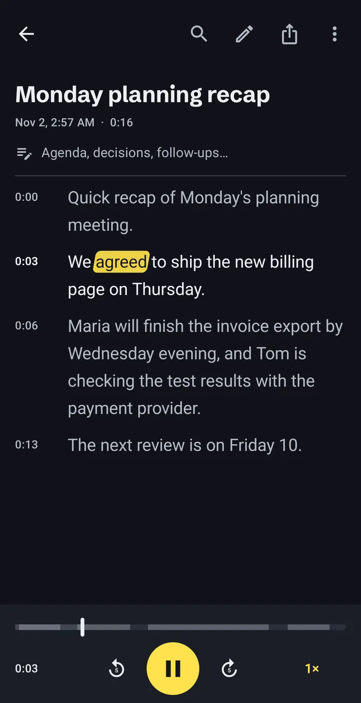
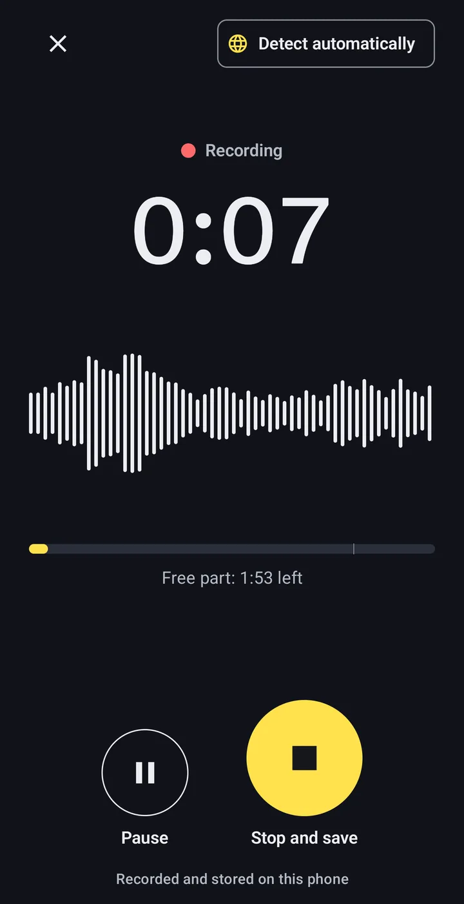
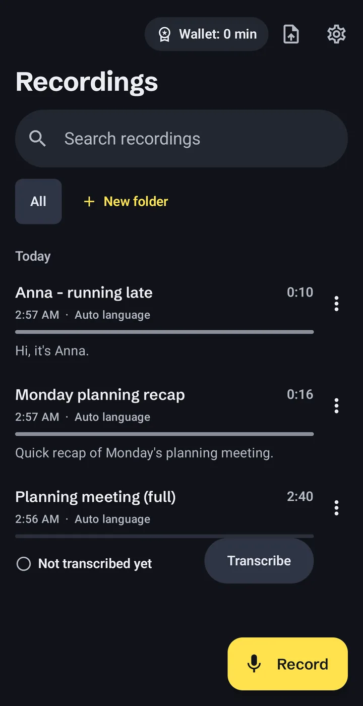

Offline Audio Transcriber
Wandle Sprachnotizen, Vorlesungen, Interviews und jede MP3- oder Videodatei auf deinem Android-Handy in Text um. Nichts wird hochgeladen.
- Kein Konto
- Nichts hochgeladen
- Funktioniert offline

Offline Audio TranscriberSprache zu Text auf deinem Handy
Drei Screenshots aus der App


Seite A: Was die App macht
- A1Aufnehmen oder MP3-, M4A-, WAV-, OGG-, MP4- und andere Audio- und Videodateien importieren
- A2Ein Transkript mit Zeitstempeln, das dem Audio folgt. Tippe auf ein Wort, um dorthin zu springen
- A3Fehler korrigieren, den Text durchsuchen und Aufnahmen in Ordnern sortieren
- A4TXT, SRT oder VTT exportieren, kopieren oder teilen
- A524 europäische Sprachen mit dem Hauptmodell; ein optionales zweites Modell ergänzt weitere
Seite B: Wie sich die App verhält
- B1Kein Konto und kein Server von uns
- B2Funktioniert offline, sobald das 671-MB-Sprachmodell auf dem Handy ist
- B3Geht nur online für den Modell-Download, Werbung und Käufe über Google Play
- B4Die ersten 2 Minuten jeder Aufnahme sind kostenlos; eine kurze Werbung bringt 3 Minuten dazu
- B5Minutenpakete verfallen nie; Pro bietet unbegrenzte Minuten
Anmerkungen
Auf einem Samsung Galaxy S23 Ultra dauerte eine einstündige Aufnahme in unserem eigenen Test etwa 8 Minuten. Ältere und günstigere Handys sind langsamer, und lange Aufträge laufen im Hintergrund weiter.
Keine Analysen, keine Absturzberichte, nichts wird verkauft.
Kleingedrucktes
Die Genauigkeit hängt von Audioqualität, Akzenten und Hintergrundgeräuschen ab. Prüfe wichtige Transkripte, bevor du dich darauf verlässt.
Angaben
- Plattform
- Android, bei Google Play
- Paketname
- pl.snoochiesoft.audiotranscriber
- App-Sprache
- Englisch und weitere Sprachen
- Studio
- Snoochie Soft, Bydgoszcz, Polen
Rechtliches und Support
Diese Seite ist auch verfügbar in: